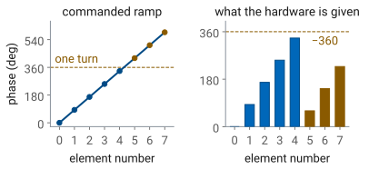
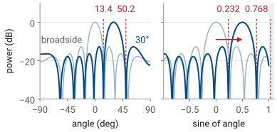
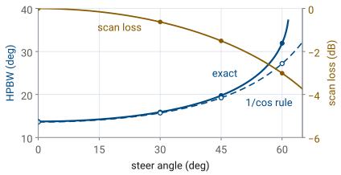
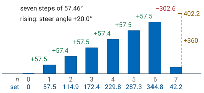
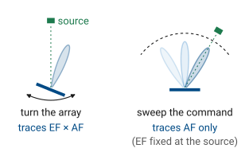
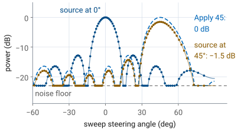
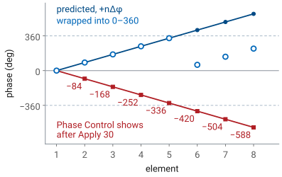
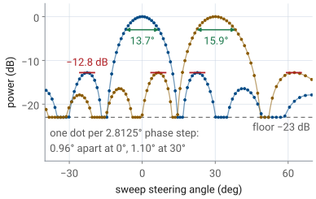

L18 - Beam Steering#
Beam Steering
The phase each PHASER element needs to steer the beam to a commanded angle, and what the steered beam looks like.
Lesson 18 · Antennas, Phased Arrays, and Radar Systems · Dr. Neil Rogers
Printing
To print the slides, switch to present mode and print: one slide a sheet, with room for notes. Print from read mode for the whole lesson.
Learning Objectives
- I can calculate the phase weights required to steer a beam to a given angle and predict the resulting array pattern.
Lesson 17 put the PHASER in front of you: eight patch elements in a row, two
ADAR1000 beamformer chips that set a phase on every element, and the backend
code that writes the steering ramp i*PhDelta to them. In the GUI, the beam
sweep sets that ramp, and Phase Control adds per-element offsets on top of it. Nothing so far has said what the ramp should be. We derive the
element-to-element phase from the arrival geometry, turn it into the eight
settings the hardware accepts, predict what the steered pattern looks like, and
then read the process backwards — given a set of phases, find the angle the
array is pointing. The second half turns to what the L18 Lab measures: the
beam-sweep trace, the two ways to put its peak at an angle, what Phase Control
shows after Apply, and how close a measured peak has to land. The Pre-Lab
frame at the end lists the predictions to bring to the lab. Every worked
number on this page is at 10.0 GHz, below the frequency of every
kit’s HB100, so Part 1 repeats each method at your own kit’s frequency.
Time Alignment
Eight elements sit in a row with no phase applied, spaced \(d = 14\ \text{mm}\) apart, and a plane wave arrives from an angle \(\theta_0\) measured from broadside. The wavefront reaches the element nearest the source first and each successive element later.
The widget opens with the steer angle locked to the source, so the commanded delays line all eight signals up and each ADAR1000’s four-element sum adds in phase with the other’s. Clear the lock and move the steer angle away from the source: the delays no longer match the arrival times, the two chip sums part, and the total shrinks.
Path, Time, and Phase
\(\Delta r\) is the extra path between neighbors; element \(n\) sees \(n\) times each quantity.
At \(\theta_0 = 30^\circ\): 7 mm and about 23 ps per element.

Look at two neighboring elements. The wavefront that has just touched one of them still has to travel a short leg before it touches the other. That leg is one side of a right triangle whose hypotenuse is the element spacing \(d\) and whose angle at the element is \(\theta_0\), so its length is
Element \(n\) sits \(n\) spacings from element 0, so its path runs \(n\ d\sin\theta_0\) shorter — it sees the wave that much sooner.
Dividing the path difference by the speed of light gives the arrival-time difference between neighbors:
For the course array steered to 30°, that is 7 mm of path and about 23 ps of arrival-time difference per element.
Now convert the time offset into a phase. A time offset of \(\Delta t\) at frequency \(f\) shifts a sinusoid’s phase by \(\omega\Delta t\), so the incoming wave produces an element-to-element phase difference of
Element \(n\) receives the wave \(n\ \Delta t\) before element 0, so its signal leads element 0’s by \(n\ \omega\Delta t = n\ \Delta\phi\). To line the eight signals up, the phase shifter on element \(n\) delays it by that same \(n\ \Delta\phi\).
Reading the Progressive Phase
Broadside needs none: all phases at zero point the beam at 0°.
It follows \(\sin\theta_0\): 0° to 10° needs 29.2°, 80° to 90° only 2.6°.
It scales with \(d/\lambda\): a higher frequency needs more phase per element.
This is the progressive phase, and it is the equation the rest of Module 3 runs on. It converts a geometric path difference into an electrical one, and the phase table, the steered pattern, and the inverse problem all follow from it. Read what it says. At broadside, \(\sin\theta_0 = 0\) and no phase is needed, which is why the array points to 0° with every phase set to zero. The phase grows with the sine of the steer angle rather than with the angle, so the same 10° of extra scan needs much less added phase near endfire than it does near broadside: on the course array, steering from 0° to 10° takes 29.2° of added phase per element, and steering from 80° to 90° takes 2.6°. And the phase scales with the electrical spacing \(d/\lambda\): the same array asked to steer the same angle needs more phase per element as the frequency goes up.
Time Delay Versus Phase Delay
A true time delay steers the beam to \(\theta_0\) at every frequency.
A phase shift equals that delay at one frequency only, the one used for \(k\).
Elsewhere the beam points slightly off \(\theta_0\): beam squint, which L23 quantifies.
Note
\(\Delta t\) is a true delay and \(\Delta\phi\) is a phase shift, and the two are equal at exactly one frequency, the one used to compute \(k\). A true time delay would steer the beam to \(\theta_0\) at every frequency in the band; a phase shifter steers it to \(\theta_0\) only at the design frequency and to a slightly different angle everywhere else. That difference has a name, beam squint, and L23 quantifies it. For now, every phase we compute today is correct only at that frequency.
Sign of the Compensating Ramp
Element \(n\) leads element 0 by \(n\ \Delta\phi\); the ADAR1000 delays it by that amount.
A positive ramp steers to \(+\theta_0\), as the GUI’s beam sweep does.
Element 0 sits at zero; a negative \(\theta_0\) runs the ramp downward.
The array’s own geometry gives element \(n\) a phase lead of \(n\ \Delta\phi\) over element 0. To make all eight signals add in phase, the beamformer delays element \(n\) by that same amount. The ADAR1000’s phase setting is a delay, so the phase commanded to element \(n\) is the lead itself:
Element 0 is the reference and gets zero. Each element after it is delayed one
step more. A positive ramp steers the beam to \(+\theta_0\), which is the
convention of the backend code L17 read, which writes i*PhDelta to element
i at every step of the GUI’s beam sweep. The GUI’s Beam Steering Apply is
a different control: it writes the opposite ramp into Phase Control as offsets,
for a reason “The Sign in Phase Control” below explains. Flipping the sign of \(\theta_0\) flips the
sign of \(\Delta\phi\) and runs the ramp the other way, which is how the same
eight channels cover both sides of broadside.
L16 wrote the same steering as a complex weight, \(a_n = \vert a_n\vert\ e^{-jn\beta}\) with \(\beta = \Delta\phi\). A delay of \(n\ \Delta\phi\) multiplies element \(n\)’s signal by \(e^{-jn\Delta\phi}\), so the weight carries a minus sign that the setting does not. That weight phase is the one place \(-n\ \Delta\phi\) survives; every phase setting in this lesson and in the lab is \(+n\ \Delta\phi\).
Receive Signal Path
This is the same array on receive, followed down its signal lines. Nothing in front of the array points anywhere: the wave from \(\theta_s\) simply arrives, and it reaches element \(n\) with a lead of \(n\ kd\sin\theta_s\) over element 0, so the eight received signals come in staggered. Each element turns whatever reaches it into a signal on its line, from any direction. The steering happens behind the elements. Inside each ADAR1000, every line passes through a phase shifter set to \(n\ \Delta\phi\) (the box shows the setting, wrapped to 0° to 360° as the chip holds it) and then a gain stage, and the chip sums its four lines. The two chip sums reach the Pluto as separate channels, and the software adds them. \(\theta_0\) is nothing but those delays: moving it changes the boxes and everything after them, and nothing in the field.
Lock the delays to the source and they cancel the leads: the shifted waves line up crest to crest, each chip sum is four times one element, and the total reaches 8. Clear the lock and move \(\theta_0\): the shifted waves fan out and the sums shrink. Turn on the 2nd source and a second wave, from \(\theta_2\), reaches the same elements; each line carries both, drawn apart in two colors. The same delays that line up the first scramble the second, so the total keeps one and loses the other: at the default settings, 8 against 0.46, or −24.8 dB. That is the receive pattern, built by the delays, not by anything in space. Step walks the chain one stage at a time. The gain stage is where L22 applies a taper; leave it at uniform for now, or pick Hann to see the aligned total fall from 8 to 4.64.
Phase Swings the Fringes
This is the two-element pair from L16 with a phase setting on the right-hand element. The spacing is \(\lambda/2\) and the elements are isotropic, so at \(\Delta\phi = 0^\circ\) the two fields add at broadside and cancel along the array axis. Sweep the phase. Delaying the right element by \(\Delta\phi\) holds back the wave that reaches the right side first, so the fringes swing toward it and the beam lands where \(\sin\theta_0 = \Delta\phi/kd\): 30° at \(\Delta\phi = 90^\circ\) and 90° at 180°. A negative setting swings it the other way. Widen the spacing to \(2\lambda\) and every lobe swings together, grating lobes included: the phase moves the whole interference pattern, which is the rigid shift in sine space later in this lesson.
The Phaser Kit (CN0566)
At 10.0 GHz with \(d = 14\ \text{mm}\): \(\lambda = 30.00\ \text{mm}\) and \(d/\lambda = 0.4667\).
One number, \(kd\), sets \(\Delta\phi\) for every steer angle on this array.
For the course array at 10.0 GHz, below every kit’s HB100, \(\lambda = c/f = 30.00\ \text{mm}\), \(d/\lambda = 0.4667\), and
Question 1 of the L18 Lab packet repeats this at your kit’s frequency.
Multiplying \(kd\) by \(\sin\theta_0\) gives \(\Delta\phi\) for any steer angle on this array.
The eight elements sit on two ADAR1000s, elements 0 to 3 on one and 4 to 7 on the other, and each chip sums its four into one channel; L17’s “The Hybrid Beamformer” adds the two channels digitally. The ramp continues across the chip boundary, so \(\phi_4 = 4\ \Delta\phi\) is set on the second chip. It steers the whole array only if the two subarray channels are phase-matched where they are summed. The GUI’s Calibrate step measures each element’s phase against its neighbor, including the element 3 and 4 pair that spans the two chips, so the mismatch between the subarrays is folded into the offsets of elements 4 to 7.
Worked Example: Phase Table at 30°
\(n\) |
0 |
1 |
2 |
3 |
|---|---|---|---|---|
set |
0 |
84.0 |
168.0 |
252.0 |
\(n\) |
4 |
5 |
6 |
7 |
set |
336.0 |
60.0 |
144.0 |
228.0 |
Whole turns wrap each \(n(84.0^\circ)\) into 0° to 360°: 420.0° becomes 60.0°.

Worked example — the phase table for \(\theta_0 = 30^\circ\)
At 10.0 GHz with \(d = 14\ \text{mm}\):
We command element \(n\) to \(n(84.0^\circ)\). The ADAR1000 accepts a phase in 0° to 360°, so we wrap each value by subtracting whole turns until it lands in that range.
\(n\) |
0 |
1 |
2 |
3 |
4 |
5 |
6 |
7 |
|---|---|---|---|---|---|---|---|---|
\(\phi_n\) (ramp) |
0 |
84.0 |
168.0 |
252.0 |
336.0 |
420.0 |
504.0 |
588.0 |
turns removed |
0 |
0 |
0 |
0 |
0 |
−360 |
−360 |
−360 |
\(\phi_n\) (set) |
0 |
84.0 |
168.0 |
252.0 |
336.0 |
60.0 |
144.0 |
228.0 |
The bottom row is what goes into the hardware. It climbs to element 4, drops back by a turn, and climbs again, a sawtooth rather than a single ramp, and it is correct: a phase of 420.0° and a phase of 60.0° produce the same field from that element.
Phase Wrapping and True Delay
At one frequency, 360° is the same as 0°: 420.0° and 60.0° steer the same beam.
The wrapped table loses the record of the true delay.
So wideband systems use time-delay units instead of, or alongside, phase shifters.
Wrapping discards whole turns, and at one frequency that loses nothing. What the wrapped table does lose is the record of the true delay, which is the reason a wideband system uses time-delay units instead of, or alongside, phase shifters.
The Steered Pattern
Element \(n\) arrives with phase \(n\ kd\sin\theta\); its delay subtracts \(n\ \Delta\phi\).
\(\Delta\phi\) is L16’s \(\beta\): the function is unchanged, only its argument.
The peak at \(\psi = 0\) now means \(\sin\theta = \sin\theta_0\): the beam points at \(\theta_0\).
L16 built the array factor for a uniform line of \(N\) elements with a progressive phase between them. With the ramp \(\phi_n = n\ \Delta\phi\) set as a delay, element \(n\) contributes a propagation phase \(n\ kd\sin\theta\) and its delay takes away \(n\ \Delta\phi\), so the array-factor argument becomes
The \(\Delta\phi\) here is the \(\beta\) of L16’s steering phase. The function is unchanged; only its argument has shifted. The peak still sits at \(\psi = 0\), which now means \(\sin\theta = \sin\theta_0\), so the main lobe points at the commanded angle.
Rigid Shift in Sine Space
Against \(\sin\theta\) the pattern slides unchanged; against \(\theta\) it stretches as it moves.
At 30°, \(\lambda/Nd = 0.268\): nulls at 13.4° and 50.2°, 16.6° and 20.2° from the peak, wider toward endfire.
The upper \(m = 2\) null would need \(\sin\theta = 1.036\): no real angle.

Every other feature of the pattern moves with it, but rigidly in \(\sin\theta\), not in \(\theta\). Plot the pattern against \(\sin\theta\) and steering slides the whole curve sideways without changing its shape. Plot it against \(\theta\) and the same curve stretches as it moves, which is the beam broadening derived in “Beam Broadening” below.
The nulls follow the same substitution. \(AF_N\) vanishes when \(N\psi/2\) is a nonzero multiple of \(\pi\), so
At a multiple of \(N\) the numerator and the denominator vanish together, and that point is a grating lobe, not a null. L16’s “Grating Lobes” puts the first one at \(\sin\theta_g = \sin\theta_0 - \lambda/d\) and keeps it out of real space while \(d < \lambda/(1 + \vert\sin\theta_0\vert)\). Steered to 30°, the course array would need \(d > 20.0\ \text{mm}\) for one to appear, and a full 90° scan needs only \(d < 15.0\ \text{mm}\), so the PHASER’s 14 mm never shows one: at 30° the lobe would sit at \(\sin\theta = -1.64\).
For the course array, \(\lambda/Nd = 30.0/112 = 0.268\). Steered to 30°, the two nulls flanking the main lobe are at \(\sin\theta = 0.232\) and \(\sin\theta = 0.768\), or 13.4° and 50.2°. They are no longer symmetric about the beam: the main lobe reaches 16.6° below the peak and 20.2° above it, wider toward endfire. The nulls are an equal step of 0.268 apart in \(\sin\theta\), and a fixed step in \(\sin\theta\) is a larger step in \(\theta\) where \(\cos\theta\) is small, since \(d\theta = d(\sin\theta)/\cos\theta\). The \(m = 2\) null on the upper side would need \(\sin\theta = 1.036\), which no real angle satisfies, so that null has left the visible region (L16, “Part 4: The Visible Region”) entirely.
Phase Ramp and Beam
Use the widget below to connect the two halves of the lesson. Drag the steer angle and watch the eight commanded phases and the main lobe move together, then switch the phase display between the wrapped values and the unwrapped ramp — the sawtooth is the same physics as the straight line. Switch the x axis to sine and the lobe slides along it without changing shape, by 0.500 at 30°, the rigid shift of the frame before. Set \(\theta_0 = 30^\circ\) and check the bars against the worked table above: a positive steer angle gives a rising ramp. Then scan out toward 60° and compare the −3 dB width printed on the pattern, which is read off the exact array factor, with the HPBW readout, which is the \(1/\cos\theta_0\) rule: at 60° the rule gives 27.2° and the pattern 31.9°. The widget draws the array at 10.0 GHz, as every example on this page does.
Beam Broadening
Steering widens the beam: a source at \(\theta_0\) sees the array’s projection, shorter by \(\cos\theta_0\).
L15’s uniform-aperture beamwidth, in radians, with the projected length.

Steering widens the beam because a source at \(\theta_0\) sees the array’s projection onto the plane perpendicular to its line of sight, which is shorter than the array by \(\cos\theta_0\).
The length that matters is \(Nd = 112\ \text{mm}\), not the 98 mm between the centers of the first and last elements. L16’s “Part 5: The Array as a Sampled Aperture” treats the array as a line source sampled every \(d\), so each element stands for a cell \(d\) wide and the eight cells fill an equivalent aperture \(Nd = 3.73\lambda\). Using 98 mm would give 15.5° at broadside instead of 13.6°, against 13.7° read off the exact array factor. The effective aperture length is therefore
L15 gave the half-power beamwidth of a uniform aperture of length \(L\) as
which for the course array at broadside is \(0.886(30.0)/112 = 0.2373\ \text{rad} = 13.6^\circ\). Substituting the projected length,
Scan Loss
The smaller projected aperture lowers the peak gain: −3 dB at 60°.
The array factor’s directivity holds near 7.5; the element pattern carries the loss.
On the kit, 1.5 dB at 45° shows; 0.6 dB at 30° does not.
The beam broadens as \(1/\cos\theta_0\). The same projection argument sets the scan loss in gain: the aperture the array presents to a source at \(\theta_0\) is smaller by \(\cos\theta_0\), so the peak gain drops by
The array factor alone barely changes its directivity as it scans. For isotropic elements it computes to 7.48 at broadside, 7.50 at 30°, 7.63 at 45°, and 7.99 at 60°, a slight rise. A linear array’s beam is a cone around the array axis, not a pencil. Steering tilts that cone toward the axis: its circumference shrinks as \(\cos\theta_0\) while its width in \(\theta\) grows as \(1/\cos\theta_0\), so the solid angle the beam fills, and with it the directivity, stays about the same. The element pattern, which is not isotropic and rolls off away from its own boresight, carries the projected-aperture loss: each element’s cell presents a projected area that shrinks as \(\cos\theta\). For design estimates, we use the scan loss above. The L18 Lab measures it by moving the source off boresight; “How Close Is Close Enough” below explains why only the 45° drop stands out from the measurement’s own ripple.
Broadening and Scan Loss Versus Angle
\(\theta_0\) |
\(\cos\theta_0\) |
HPBW |
Gain relative to broadside |
|---|---|---|---|
0° |
1.000 |
13.6° |
reference |
30° |
0.866 |
15.7° |
−0.6 dB |
45° |
0.707 |
19.2° |
−1.5 dB |
60° |
0.500 |
27.2° |
−3.0 dB |
Exact width at 60° is 31.9°: the rule reads narrow past 50° of scan.

Because the beam broadens and the peak gain falls as the array scans, designers specify a scanned array over a limited field of view: at 60° the PHASER’s beam is twice as wide as at broadside by the rule (2.3 times, exactly), its peak gain is 3 dB lower, and scanning further adds little coverage.
Note
The \(1/\cos\theta_0\) rule is an approximation, and it reads slightly narrow at large scan angles. Measuring the −3 dB width directly off the array factor for this array gives 13.7° at broadside and 19.8° at 45°, both within about half a degree of the rule, but 31.9° at 60° against the rule’s 27.2°. Use the rule for design estimates out to about 50° and the pattern itself past that.
The Inverse Problem
Difference neighboring elements: \(\phi_{n+1} - \phi_n\).
Unwrap. Add or subtract 360° from any difference that disagrees with the others until all seven agree.
That common step is \(\Delta\phi\).
Solve for \(\sin\theta_0\) and take the arcsine:
\[\sin\theta_0 = \frac{\Delta\phi}{kd}\]
The lab hands you the opposite problem. The GUI, or a data file, gives you eight phases, and you have to say where the beam is pointing. Everything you need is in \(\phi_n = n\ \Delta\phi\), run in reverse:
Worked Example: Recovering the Steer Angle
Unwrapped, \(\phi_7 = 402.2^\circ\): seven steps of 57.46°.
Rising ramp: positive \(\Delta\phi\), positive steer angle.

Worked example — recovering the steer angle
The beamformer reports these settings, at 10.0 GHz:
\(n\) |
0 |
1 |
2 |
3 |
4 |
5 |
6 |
7 |
|---|---|---|---|---|---|---|---|---|
\(\phi_n\) (deg) |
0 |
57.5 |
114.9 |
172.4 |
229.8 |
287.3 |
344.8 |
42.2 |
The first six differences are 57.5°, 57.4°, 57.5°, 57.4°, 57.5°, and 57.5°. The seventh is \(42.2 - 344.8 = -302.6^\circ\), which is 57.4° once a full turn is restored. All seven agree to within the 0.1° rounding of the table, so the ramp is uniform. The span of the whole array gives the step most precisely: element 7 sits at \(42.2^\circ + 360^\circ = 402.2^\circ\) unwrapped, seven steps from element 0, so
The ramp rises with \(n\) and the steer angle is positive, which follows from the sign convention: the commanded phase is \(+n\ \Delta\phi\), so a rising ramp means a positive \(\Delta\phi\) and a beam on the positive side of broadside, the side the GUI’s sweep plot calls positive.
Two Sanity Checks
Seven differences that cannot be made to agree: no uniform steering ramp. Look for a calibration offset or a bad readout.
\(\vert\Delta\phi/kd\vert > 1\): no real angle fits, so suspect an arithmetic or unit error.
Two checks catch most errors. If the seven differences cannot be made to agree, the array is not carrying a uniform steering ramp: it may include a per-element calibration offset, or the readout may not reflect the commanded phases. Where the odd difference sits says which. An offset \(\delta\) on an interior element spoils the two differences on either side of it, one by \(+\delta\) and the next by \(-\delta\). A single odd difference therefore points to an end element, 0 or 7, or to the step from element 3 to element 4, where the ramp crosses from one ADAR1000 to the other: a phase error between the two subarray channels moves elements 4 to 7 together, which is what the GUI’s Calibrate step measures and removes. And if \(\vert\Delta\phi/kd\vert\) comes out greater than 1, no real angle produces that ramp, which points at an arithmetic or unit error.
Phase-Shifter Resolution
The ADAR1000’s phase shifter has 7 bits, so every commanded phase rounds to this grid.
At 30°, the 84.0° step is set as 30 steps, 84.38°.
L23 computes the effect on sidelobe level and null depth.
The ADAR1000’s phase shifter has 7 bits (L17, “The ADAR1000 Beamformers”), so its smallest step is \(360^\circ/128 = 2.8125^\circ\) and every commanded phase lands on that grid. The 84.0° step of the 30° table is 29.87 steps and is set as 30 steps, 84.38°. The backend rounds each element’s unwrapped ramp value to the grid before wrapping, so the whole 30° ramp is set as 0, 84.38, 168.75, 253.13, 334.69, 59.06, 143.44, and 227.81°. L23 computes how much that grid raises the sidelobe level and reduces null depth.
The Beam-Sweep Trace
The sweep steps the beam past a fixed source: power against steered angle.
The array factor depends on \(\sin\theta - \sin\theta_0\), so the trace peaks at the source.
It records the array factor, scaled by the element pattern at the source.

The GUI’s beam sweep writes the ramp \(+n\ \Delta\phi_s\) for one value of \(\Delta\phi_s\) after another and plots the received power at the angle each ramp steers to. The x-axis of its Rectangular plot is that steered angle, not a measured arrival angle. With the Steering Angle preset loaded, the sweep steps \(\Delta\phi_s\) one phase-shifter LSB, 2.8125°, at a time.
The trace is a picture of the pattern because of “The Steered Pattern” above: the array factor depends only on \(\sin\theta - \sin\theta_0\), and its magnitude is even, so the power received from a source at \(\theta_{\text{src}}\) as the beam steps across \(\theta_0\) traces the same curve as the pattern of a beam steered at the source. It peaks where the steered angle equals the source angle.
Rotating the array in front of a fixed source would record a different quantity. Turning the array moves the source across the element pattern as well, so the rotation records the element pattern times the array factor (L16). The sweep holds the element pattern fixed at the source’s direction, so it records the array factor alone, scaled by the element pattern’s value there. A peak-level comparison between two source positions measures that scale factor. Every point of the sweep also uses a different set of element phases, so the beamformer’s own errors, phase quantization and gain imbalance, shape the trace.
The Sweep, Step by Step
This is the sweep the PHASER runs, slowed down. Each step adds one phase-shifter LSB, 2.8125°, to the element-to-element phase \(\Delta\phi_s\) and writes the ramp \(+n\ \Delta\phi_s\) to the eight channels. The left panel shows the beam that ramp makes and, in the inset, the eight element signals from the HB100 added tip to tail: each one turned \(kd\sin\theta_{\text{src}} - \Delta\phi_s\) from the last. The instrument plots the power of that sum at the angle the ramp steers to, \(\sin\theta_0 = \Delta\phi_s/kd\), which is the right panel. Away from the source the chain curls up and the point lands in a sidelobe or on the noise floor; as the beam reaches the source the chain straightens and the trace climbs to its peak, at the source’s angle. Move the source and the peak follows it, lower by the element pattern at its new angle; press step to advance the sweep one LSB at a time.
Two Ways to Steer the Peak
Move the source: Phase Control at zero, the HB100 at 45°.
Command the beam: the source at boresight, Apply 45.
Same place, same width; only the moved source loses level, 1.5 dB.

There are two ways to put the trace’s peak at 45°. Move the source: with Phase Control at zero, the sweep’s own ramp is the only steering, and the trace peaks at the source’s angle. Or command the beam: leave the source at boresight and press Apply in the Beam Steering section, which loads per-element offsets that shift the trace, so Apply 45 puts a boresight source’s peak at +45°.
The two traces have the same width, because both shift the same function of \(\sin\theta - \sin\theta_0\) to the same place. Their peak levels differ. A moved source sits 45° off each element’s own boresight, and the element pattern lowers the whole trace by its roll-off there: \(10\log_{10}(\cos 45^\circ) = -1.5\) dB for the ideal element of “Scan Loss” above. A commanded beam leaves the source on the elements’ boresight, so its peak level matches the boresight trace. At 30° the same drop is only 0.6 dB, which “How Close Is Close Enough” below shows is too small to read from one trace.
The Sign in Phase Control
Element |
E1 |
E2 |
E3 |
E4 |
|---|---|---|---|---|
Phase Control |
0 |
−84 |
−168 |
−252 |
Element |
E5 |
E6 |
E7 |
E8 |
Phase Control |
−336 |
−420 |
−504 |
−588 |
Apply 30 writes \(-n\Delta\phi\), whole degrees, unwrapped.
The sweep adds \(+n\Delta\phi_s\); the sum vanishes at +30°.

The GUI numbers the elements E1 to E8, so E\((n+1)\) is this lesson’s element \(n\). When you type 30 into Steer Angle (deg) and press Apply, the GUI computes \(\Delta\phi\) from the Signal Freq on screen and writes \(-n\Delta\phi\) into the Phase Control boxes, rounded to whole degrees and not wrapped. At 10.0 GHz the boxes read 0, −84, −168, −252, −336, −420, −504, and −588: the worked example’s ramp with its sign flipped. Question 2 of the packet predicts these boxes at your kit’s frequency. The sliders beside the boxes stop at ±180°, so read the boxes.
The minus sign is deliberate. During a sweep the backend adds its own ramp, \(+n\Delta\phi_s\), to whatever Phase Control holds, so element \(n\) carries \(n(\Delta\phi_s - \Delta\phi_0)\). A boresight source needs no ramp at all, so the array points at it where \(\Delta\phi_s = \Delta\phi_0\), which is the plotted angle +30°. Apply is therefore the offset that makes a boresight source look like a source at \(+\theta_0\) on the sweep plot. On their own, with no sweep ramp added, the offsets would point the beam to −30°. To compare the read-back with the wrapped ramp, reduce it modulo 360°: E6’s −420° is 300°, which is \(360^\circ - 60^\circ\), the wrapped 60.0° with its sign flipped.
The GUI computes \(\Delta\phi\) with \(c = 299792458\ \text{m/s}\), not the \(3.00\times 10^8\ \text{m/s}\) of our predictions, a step 0.07% larger, so a prediction can differ from the read-back by 1° on one element after rounding.
Predicted Sweep
The widget predicts the trace at 10.0 GHz, like every example on this page, so it shows the method rather than your Part 1 answers. Set the source’s angle on the arc, which is where the trace should peak, and read \(\Delta\phi\), the predicted half-power beamwidth, and the peak drop, and two rows of phases: the beam ramp \(+n\Delta\phi\) wrapped to 0° to 360°, and what Phase Control shows after Apply at the same angle, the falling whole-degree offsets. Two things to notice: the dots mark the angles the sweep samples, one 2.8125° phase step apart, about 1° near broadside and wider toward endfire; and the beam widens as the peak moves away from broadside while the sidelobe structure stretches with it.
Reading the Trace
Reading |
Expect |
|---|---|
Peak angle |
within the pass standard |
HPBW |
within 1° of the rule (1.5° at 45°) |
First sidelobes |
−11 to −13 dBc |
Floor |
about −23 dBc |

The sweep samples the trace at discrete steps. Each dot is one 2.8125° phase step, which moves \(\sin\theta\) by \(2.8125^\circ/kd\): at 10.0 GHz, \(2.8125/168.0 = 0.0167\), or 0.96° of angle at broadside, widening as \(1/\cos\theta\) toward endfire. A half-power crossing falls between two dots, so a beamwidth read off the trace is good to about a degree. The lab compares each width with the \(0.886\lambda/(Nd\cos\theta_0)\) rule of “Beam Broadening”; the exact pattern reads a few tenths wider, up to about half a degree at 45°, which is why the tolerance grows there.
Read every level in dBc, dB relative to the trace’s own peak: subtract the peak from the reading. A level in dBc no longer depends on Rx Gain or on the source’s distance, so a sidelobe compares directly with the array factor’s −12.8 dB. The sweep’s floor sits about 23 dB below the peak, and the first sidelobes come up out of it at −11 to −13 dBc.
The sweep’s last steps ask for more phase than any direction in front of the array needs, and the GUI plots all of them at ±90°, so the trace stands up at its edges. That column is the array factor at the extra phase, not a lobe. With the source at 45° it can even read higher than the main lobe, and the L18 Lab says what to do when it does.
How Close Is Close Enough
Three independent errors move a measured peak: the sweep grid, the arc’s placement and aim, and reflections.
They add as a root sum of squares.
A level change smaller than the reflection ripple cannot be read from one trace.
A measured peak will not land exactly on the source’s angle, and a measured beamwidth will not equal its prediction exactly. Three independent effects account for the difference. Part 1 of the L18 Lab packet sizes each one for the lab’s setup; the worked example below sizes them for a different setup.
The sweep grid. The trace holds no information between samples, so a peak read off it can be wrong by half a sample step. One step moves \(\sin\theta\) by \(2.8125^\circ/kd\) (“Reading the Trace” above), and near an angle \(\theta\) that is an angle step of
The arc’s placement and aim. On an arc of radius \(R\), one degree is an arc length of
so a tripod placed a distance \(e\) off its mark puts the reference angle off by \(e/s\) degrees. This error is in the reference, not in the array.
Reflections. The table, the walls, and the people nearby return copies of the tone. A reflection with amplitude ratio \(\rho\) to the direct path raises or lowers the level by
depending on its phase. The reflection’s phase relative to the direct path changes across the sweep, so the ripple rises on one side of the main lobe and falls on the other. That tilts the flat top of the lobe, and its maximum slides toward the raised side. A reflection 20 dB down, \(\rho = 0.1\), moves it by up to about a degree, and a stronger one moves it further.
Because the three are independent, they combine as a root sum of squares,
and a peak within that of its reference passes. Agreement to 0.1° points to a mistake in the comparison, not a good measurement.
Worked example — an error budget for another setup
At 10.0 GHz the source sits at 45° on a 1.5 m arc, you can place the tripod to within 30 mm, and a wall returns a reflection 14 dB below the direct path, \(\rho = 0.2\).
The grid, with \(kd = 168.0^\circ\) from “The Phaser Kit (CN0566)”:
so a peak read off the grid can be off by half of that, 0.68°.
One degree of the arc:
so the 30 mm placement error is
The reflection:
Summing the direct trace with a reflected one, over every reflection angle and phase, moves the 45° peak by up to just under 2°, so the budget allows 2.0° for it. The total is
and a pass standard of ±2.5° follows. The reflection is the largest term, so clearing the wall’s path cuts the budget most. The same ripple, +1.6 to −1.9 dB, is larger than the 1.5 dB scan loss at 45°, so in this setup one trace could not show the scan loss at any angle.
The same ripple sets which level changes the lab can read. A moved source loses \(10\log_{10}(\cos\theta)\), 0.6 dB at 30° and 1.5 dB at 45°. Part 1 sizes the ripple of the lab’s reflection, 20 dB down; a drop no larger than that ripple cannot be told from a reflection in one reading, which is why the lab compares levels at 45°.
Summary: Phase Ramp
Symbol / idea |
What it is |
Number to remember |
|---|---|---|
\(\Delta\phi = kd\sin\theta_0\) |
progressive element-to-element phase |
\(168.0^\circ \times \sin\theta_0\) for the course array at 10.0 GHz |
\(\phi_n = +n\ \Delta\phi\) |
commanded ramp (a delay), element \(n\) |
84.0° per element at \(\theta_0 = 30^\circ\) |
wrapping |
whole turns removed to fit 0° to 360° |
420.0° is set as 60.0° |
Summary: Steered Pattern
Symbol / idea |
What it is |
Number to remember |
|---|---|---|
\(\psi = kd(\sin\theta - \sin\theta_0)\) |
array-factor argument |
peak where \(\psi = 0\), so \(\theta = \theta_0\) |
\(\sin\theta_{\text{null}} = \sin\theta_0 \pm m\lambda/Nd\) |
null locations |
\(\lambda/Nd = 0.268\); nulls at 13.4° and 50.2° for \(\theta_0 = 30^\circ\) |
Summary: Broadening and Hardware
Symbol / idea |
What it is |
Number to remember |
|---|---|---|
\(\theta_{\text{HP}} \approx \theta_{\text{HP}}(0)/\cos\theta_0\) |
beam broadening |
\(13.6^\circ \to 19.2^\circ\) at 45°, 27.2° at 60° |
scan loss |
peak gain falls as \(\cos\theta_0\), carried by the element pattern |
−3 dB at \(\theta_0 = 60^\circ\) |
LSB \(= 360^\circ/2^B\) |
phase-shifter step |
2.8125° for the ADAR1000’s 7 bits |
Summary: The Trace
Symbol / idea |
What it is |
Number to remember |
|---|---|---|
Beam-sweep trace |
power against steered angle, source fixed |
peaks at the source angle, or at the Apply angle for a boresight source |
Phase Control after Apply |
\(-n\Delta\phi\), whole degrees, unwrapped |
E8 at 30°: −588 at 10.0 GHz |
Sweep grid |
one 2.8125° phase step per sample |
0.96° at broadside at 10.0 GHz |
Scan loss on the kit |
element-pattern drop, moved source only |
−1.5 dB at 45°; the 0.6 dB at 30° is inside the ripple |
Looking Ahead
The L18 Lab: put the peak at 30° and 45° by moving the source and by Apply.
Check each peak’s angle and width against your Part 1 predictions.
L20 to L23: beamwidth, tapering, grating lobes, squint, and quantization.
The L18 Lab puts this lesson on the hardware. You load the Steering Angle preset, move the source along an arc and then apply a steer angle, and compare each peak’s angle and width with the prediction you made in Part 1 of the packet. Part 1 redoes this lesson’s phase table at your kit’s frequency, because every phase in the lab depends on it, and the comparison only means something if you wrote the prediction down first.
Further out, the ideal steered pattern of this lesson starts to fray. L20 and its lab measure beamwidth against theory across element counts, L22 trades sidelobe level for beamwidth with a taper, and L23 collects the three ways a real steered array departs from today’s result: grating lobes when the spacing is too wide (L16’s criterion, which the PHASER’s 14 mm meets at every angle), beam squint when the frequency moves off the one you designed for, and quantization when the ideal ramp has to land on the 2.8125° grid.
Pre-Lab
Part 1 of the L18 Lab packet is the pre-lab. Do it before the lab period, at the HB100 frequency your kit reported in the L17 Lab, and bring it to class: you check every reading you take in Part 2 against it.
Part 1 |
You predict |
Checked in |
|---|---|---|
Question 1 |
your frequency, \(\lambda\), \(d/\lambda\), \(kd\), and \(\Delta\phi\) at 30° |
Step 3, and Step 18 through Question 2 |
Question 2 |
the eight Phase Control values after Apply 30, and the sign |
Step 18, Table B |
Question 3 |
the HPBW at 0°, 15°, 30°, and 45°, the level drop, and the pass standard |
Steps 11 to 14 and 16 to 19, Tables A and B |
Question 4 |
Run 2, rehearsed on the hosted simulator |
Steps 15 to 20 |
Question 1 redoes this lesson’s worked example at your kit’s frequency, and Question 2 does the same for “The Sign in Phase Control”. “Broadening and Scan Loss Versus Angle” and “Reading the Trace” work Question 3(a) and (b) at 10.0 GHz, and the worked example in “How Close Is Close Enough” works Question 3(c) to (e) for a different setup.